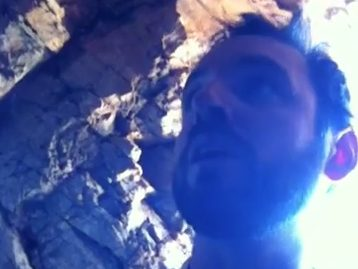

In 2012 Ian Thorson and his wife Lama Christie McNally attempted to find spiritual perfection on a mountain top in Arizona. Only a few loyal followers knew where they were and the supply drops were increasingly sporadic. Water was scarce, but they collected what they could of it in a tarp and a plastic jug after a lucky snowfall. They lived there for almost a month before Christie and then Ian fell sick with dysentery. At first Ian was filled with rage by his plight–going as far as hitting himself on the head with a piece of hard plastic in the cave. They packed an emergency locator beacon and a cell phone with them, but Christie waited three days before she sent out a call for help. It was too late for Ian.
Two months after Ian Thorson died her the arms I traveled to Arizona to try to understand the world through his eyes. I wanted to know why she hadn’t pushed the button that would have saved his life earlier. I wanted to see the place where it happened and feel desolate climate of this part of the world. Most importantly, I wanted to see the cave where Ian spent the last month of his life.
The journey could have killed me.
People at Diamond Mountain all told me that even though they knew where the cave was, no one wanted to visit it. Bad things had happened there and no one wanted to tempt fate. The sheriff Larry Noland implored me waive off my expedition. He tried to scare me with storiesof poisonous cacti, impossible heat, bears and rattlesnakes in every rocky crevasse. But I was adamant and convinced a local rancher to escort me at least part of the way.
It was only a mile and a half, but it was the hardest hike of my life. It also turned out that Noland was right on almost every scary story that he told me. I heard rattle snakes, got stuck by a poisonous cacti. Luckily there were no bears.
What I did discover, though, was that McNally and Thorson spent their last days together in a small cave that offered magnificent views the retreat valley below, but very few amenities to support them. At one point the cave had been home to a Hohokom Indian who had stashed, but never recovered, a giant pot of grain on the dirt floor. I also learned that merely visiting the spot was dangerous enough to almost kill me. The rancher, Jerry, turned back after I pushed up a steep gravel slope. He was out of water and thought it too risky to continue. I pushed on and found the cave. Getting back, however, was even more difficult than coming up.
This is a video I shot on my way back down. I think the pain in my voice explains much more than I ever could with with a keyboard.
This was the beginning of a project that would take me almost two years to complete. First with a story in Playboy magazine, and later as a book “A Death on Diamond Mountain“